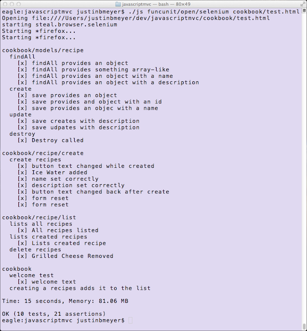

JavaScriptMVC puts a tremendous emphasis on
testing. It uses FuncUnit to easily write
tests that can be run in the browser or automated. FuncUnit
integrates:
QUnit - Assertions and testing structure
Syn - Synthetic user events like clicking and typing
Selenium / PhantomJS - Browser automation
When you scaffolded recipe, it created tests and test pages for you. This
guide will show you how to:
Run tests.
Understand the unit tests.
Run functional tests.
Understand the functional tests.
Test isTasty functionality.
Run Tests
Open cookbook/cookbook_test.js. You'll notice it steals tests
for the model and controls. There
are also tests that verify the
original "Welcome to JavaScriptMVC" text that we removed. Remove the
extraneous test so cookbook_test.js just looks like this:
steal(
'funcunit',
'./models/recipe_test.js',
'cookbook/recipe/create/create_test.js',
'cookbook/recipe/list/list_test.js',
function (S) {
// this tests the assembly
module("cookbook", {
setup : function () {
S.open("//cookbook/index.html");
}
});
test("creating a recipes adds it to the list ", function () {
S("[name=name]").type("Ice Water");
S("[name=description]")
.type("Pour water in a glass. Add ice cubes.");
S("[type=submit]").click();
S("h3:contains(Ice Water)").exists();
S("p:contains(Pour water in a glass. Add ice cubes.)").exists()
});
});
To run all of cookbook's tests, open
cookbook/test.html in a browser.
To run those same tests with Selenium, first you must set up a
local server, like Apache, running at the javascriptmvc root. Make sure you can
open your test page from this server, at a URL like http://localhost/javascriptmvc/cookbook/test.html.
If Selenium is unable to open your browsers, it's likely you have them in an
unusual location. Read the Other Browsers section in Selenium
docs for information on how to configure browsers so selenium can find them.
Continue to Building Cookbook or continuen reading to learn how
this code works.
Tiered testing
If an application should be built of small, isolated modules that are glued together, its tests should reflect that.
Cookbook's modules are each designed to be built and tested independently. For example, the cookbook/recipe/create module has its own tests and test page. Open cookbook/recipe/create/test.html
and it will run the tests in cookbook/recipe/create/create_test.js.
To test the "glue", cookbook_test.js loads all modules' tests
and provides an integration test, verifying the application as a whole works as expected.
The following goes through:
cookbook/models/recipe_test.js
cookbook/recipe/create/create_test.js
cookbook/recipe/list/list_test.js
cookbook/cookbook_test.js
recipe_test.js
cookbook/models/recipe_test.js unit tests the
cookbook/models/recipe, module which is aliased as Recipe. It starts
by loading the Recipe model, QUnit, and the fixtures
used to simulate the server:
The findAll test calls Recipe.findAll and
attempts to verify that it returns recipes with
a name and description.
Because Recipe.findAll is asynchronous, this
test calls QUnit's stop and start methods
to signal when the test is complete.
recipe_test.js goes on to test the remainder of
Recipe's CRUD methods: create, update, destroy.
create_test.js
cookbook/recipe/create/create_test.js tests
the cookbook/recipe/create module aliased as
RecipeCreate. It starts by loading funcunit, the
RecipeCreate control, the Recipe model and
the recipeStore fixture:
setup creates a form element and creates a new RecipeCreate instance
on it. teardown removes the element and resets the
recipeStore to contain the original set of recipes.
create_test.js tests that RecipeCreate can create a recipe:
test("create recipes", function () {
...
});
We are going to create an Ice Water recipe, so we
listen to a recipe being created and check it's contents like:
stop();
Recipe.bind("created",function(ev, recipe){
ok(true, "Ice Water added");
equals(recipe.name,
"Ice Water",
"name set correctly");
equals(recipe.description,
"Pour water in a glass. Add ice cubes.",
"description set correctly" );
start();
Recipe.unbind("created",arguments.callee);
})
As this test is asynchronous, it calls QUnit's stop and start. After
listening to Recipes being created, the test creates
a recipe by simulating a user filling in the recipe form and clicking submit:
S("[name=name]").type("Ice Water");
S("[name=description]").type("Pour water in a glass. "+
"Add ice cubes.");
S("[type=submit]").click();
Then, it verifies the submit button's value is "Creating":
S("[type=submit]").val("Creating...",
"button text changed while created");
Finally, when the value is changed back to "Create", the
test checks that the form has been reset:
S("[type=submit]").val("Create", function(){
ok(true, "button text changed back after create" );
equals(S("[name=name]").val(), "", "form reset");
equals(S("[name=description]").val(), "", "form reset");
});
list_test.js
cookbook/recipe/list/list_test.js tests the cookbook/recipe/list
module aliased as RecipeList. It starts by loading funcunit, the
RecipeList control, the Recipe model and
the recipeStore fixture:
setup creates a div element and creates a new RecipeList
instance. That list will be accessible within each test as this.list.
teardown removes the element and resets
the recipeStore to contain the original set of recipes.
Then, list_test.js tests that RecipeList displays all
the recipes that are loaded on the server:
test("lists all recipes", function(){
stop();
Recipe.findAll({}, function(recipes){
S(".recipe").size(recipes.length,function(){
ok(true, "All recipes listed");
start();
})
})
});
And it tests that created recipes are added to the list of recipes
by creating a recipe and making sure a corresponding element shows
up on the page:
test("lists created recipes", function(){
new Recipe({
name: "Grilled Cheese",
description: "grill cheese in bread"
}).save();
S('h3:contains(Grilled Cheese X)')
.exists("Lists created recipe");
})
To test deleting a recipe, list_test.js creates a recipe then
clicks its destroy link and makes sure the element has been removed:
test("delete recipes", function(){
new Recipe({
name: "Ice Water",
description: "mix ice and water"
}).save();
// wait until grilled cheese has been added
S('h3:contains(Ice Water X)').exists();
S.confirm(true);
S('h3:last a').click();
S('h3:contains(Ice Water)')
.missing("Grilled Cheese Removed");
});
cookbook_test.js
cookbook/cookbook_test.js loads all other tests
and tests the cookbook module. It starts
by loading FuncUnit and all the other tests:
steal(
'funcunit',
'./models/recipe_test.js',
'cookbook/recipe/create/create_test.js',
'cookbook/recipe/list/list_test.js',
function (S) {
Next it defines which module it's testing:
module("cookbook", {
setup : function () {
S.open("//cookbook/index.html");
}
});
setup uses FuncUnit to open the application's page. Any
FuncUnit commands, for example S("h1").text(), will
operate within that page instead of the
testing window. This is ideal for integration and functional tests.
cookbook_test.js then tests if the page contains
JavaScriptMVC's welcome text:
test("welcome test", function () {
equals( S("h1").text(),
"Welcome to JavaScriptMVC!",
"welcome text" );
});
Finally, it tests the integration between RecipeCreate and
RecipeList by creating a recipe and making sure it is
listed on the page:
test("creating a recipes adds it to the list ", function () {
S("[name=name]").type("Ice Water");
S("[name=description]").type("Pour water in a glass. "+
"Add ice cubes.");
S("[type=submit]").click();
S("h3:contains(Ice Water)").exists();
S("p:contains(Pour water in a glass. Add ice cubes.)")
.exists()
});
JavaScriptMVC puts a tremendous emphasis on testing. It uses FuncUnit to easily write tests that can be run in the browser or automated. FuncUnit integrates:
When you scaffolded recipe, it created tests and test pages for you. This guide will show you how to:
Run Tests
Open
cookbook/cookbook_test.js. You'll notice it steals tests for the model and controls. There are also tests that verify the original "Welcome to JavaScriptMVC" text that we removed. Remove the extraneous test socookbook_test.jsjust looks like this:To run all of cookbook's tests, open
cookbook/test.htmlin a browser.To run those same tests with Selenium, first you must set up a local server, like Apache, running at the javascriptmvc root. Make sure you can open your test page from this server, at a URL like http://localhost/javascriptmvc/cookbook/test.html.
Then run:
You should see something like:

Continue to Building Cookbook or continuen reading to learn how this code works.
Tiered testing
If an application should be built of small, isolated modules that are glued together, its tests should reflect that.
Cookbook's modules are each designed to be built and tested independently. For example, the
cookbook/recipe/createmodule has its own tests and test page. Opencookbook/recipe/create/test.htmland it will run the tests incookbook/recipe/create/create_test.js.To test the "glue",
cookbook_test.jsloads all modules' tests and provides an integration test, verifying the application as a whole works as expected.The following goes through:
recipe_test.js
cookbook/models/recipe_test.jsunit tests thecookbook/models/recipe, module which is aliased as Recipe. It starts by loading theRecipemodel, QUnit, and the fixtures used to simulate the server:Next it specifies which module the following tests belong to:
Then, it defines a
findAlltest:The
findAlltest callsRecipe.findAlland attempts to verify that it returns recipes with a name and description.Because
Recipe.findAllis asynchronous, this test calls QUnit'sstopandstartmethods to signal when the test is complete.recipe_test.jsgoes on to test the remainder ofRecipe's CRUD methods: create, update, destroy.create_test.js
cookbook/recipe/create/create_test.jstests thecookbook/recipe/createmodule aliased as RecipeCreate. It starts by loading funcunit, the RecipeCreate control, the Recipe model and the recipeStore fixture:Next, it defines the module, with setup and teardown code that runs before and after every test:
setupcreates a form element and creates a newRecipeCreateinstanceon it.
teardownremoves the element and resets therecipeStoreto contain the original set of recipes.create_test.jstests that RecipeCreate can create a recipe:We are going to create an Ice Water recipe, so we listen to a recipe being created and check it's contents like:
As this test is asynchronous, it calls QUnit's stop and start. After listening to Recipes being created, the test creates a recipe by simulating a user filling in the recipe form and clicking submit:
Then, it verifies the submit button's value is "Creating":
Finally, when the value is changed back to "Create", the test checks that the form has been reset:
list_test.js
cookbook/recipe/list/list_test.jstests thecookbook/recipe/listmodule aliased as RecipeList. It starts by loading funcunit, the RecipeList control, the Recipe model and the recipeStore fixture:Next, it defines the module it is testing, with setup and teardown code that runs before and after every test:
setupcreates a div element and creates a newRecipeListinstance. That list will be accessible within each test asthis.list.teardownremoves the element and resets therecipeStoreto contain the original set of recipes.Then,
list_test.jstests that RecipeList displays all the recipes that are loaded on the server:And it tests that created recipes are added to the list of recipes by creating a recipe and making sure a corresponding element shows up on the page:
To test deleting a recipe,
list_test.jscreates a recipe then clicks its destroy link and makes sure the element has been removed:cookbook_test.js
cookbook/cookbook_test.jsloads all other tests and tests thecookbookmodule. It starts by loading FuncUnit and all the other tests:Next it defines which module it's testing:
setupuses FuncUnit to open the application's page. Any FuncUnit commands, for exampleS("h1").text(), will operate within that page instead of the testing window. This is ideal for integration and functional tests.cookbook_test.jsthen tests if the page contains JavaScriptMVC's welcome text:Finally, it tests the integration between RecipeCreate and RecipeList by creating a recipe and making sure it is listed on the page:
Continue to Building Cookbook.